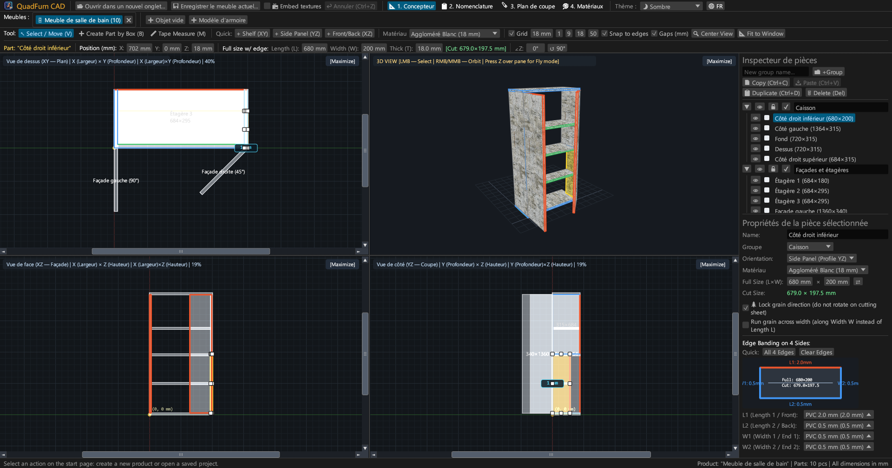
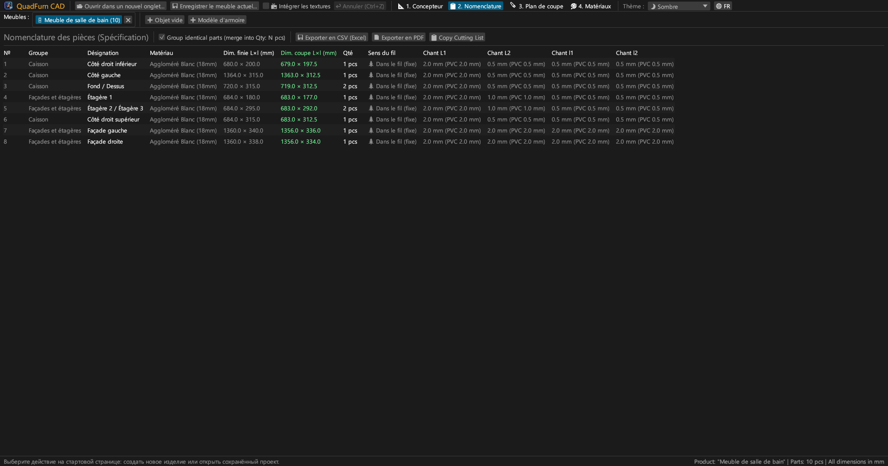
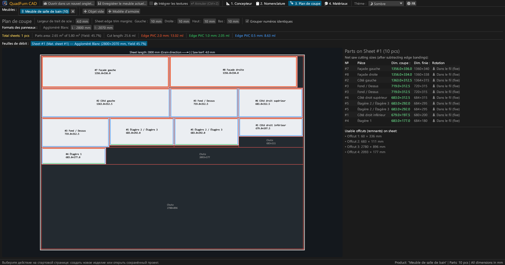
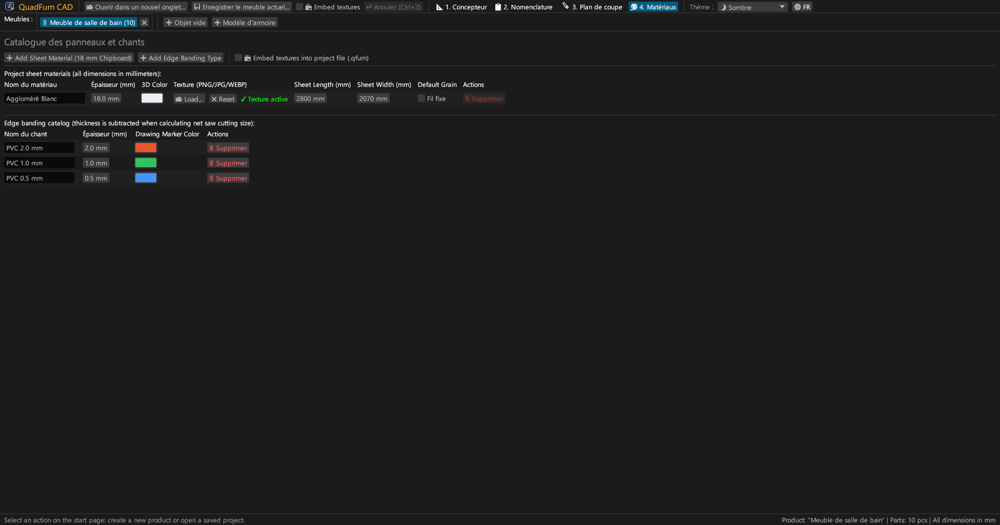
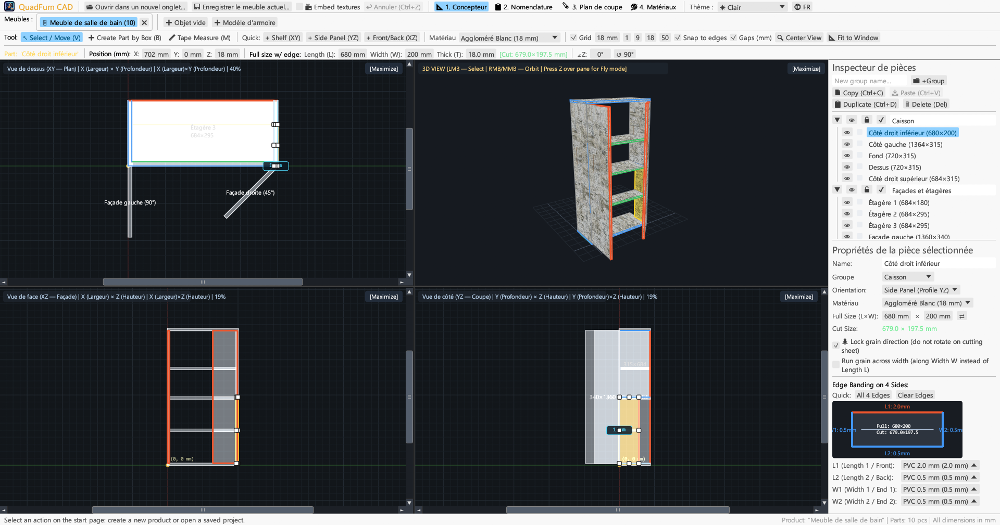
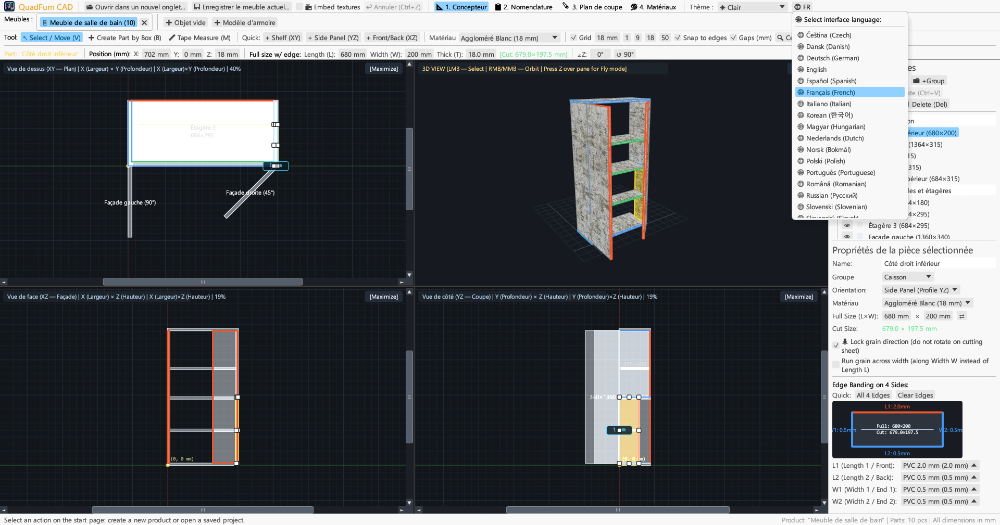

Logiciel CAO rapide avec accélération matérielle pour menuisiers et agenceurs. Modélisation 4 vues, saisie mathématique des cotes, déduction des chants et calepinage.

Réunit dessin en 4 vues, contrôle numérique direct et optimisation de découpe dans une application unique.
Édition sur Plan (XY), Élévation (XZ), Coupe (YZ) et 3D avec ascenseurs, magnétisme d'arêtes et affichage des jeux en direct.
Saisie directe des coordonnées (X, Y, Z), dimensions (L × W × T) et rotation avec calculatrice intégrée (ex. 600-4 ou (800-36)/2).
Attribution de bandes de chant PVC/ABS (0,4–2,0 mm) sur 4 côtés pour calculer immédiatement les cotes brutes de sciage.
Calepinage respectant le fil du bois, l'épaisseur du trait de scie (4,0 mm), le délignage et l'inventaire des chutes réutilisables.
Travaillez sur plusieurs meubles en parallèle. Copiez-collez des panneaux d'un projet à l'autre avec transfert des matériaux.
Export au format A4 Paysage prêt à l'impression : débit, plans en 4 vues, calepinage des panneaux et récapitulatif avec +15% de marge.





Binaires autonomes sans dépendance externe.
Exécutable portable avec icône, sans installation requise.
sudo apt install ./quadfurn_0.2.4_amd64.deb
Bundle universel pour Apple Silicon (M1–M4) et Intel x86_64.
| Raccourci | Action | Portée |
|---|---|---|
| V | Outil Sélection / Déplacement (8 poignées, cadre de sélection) | Vues 2D |
| B | Créer un panneau par rectangle dans le plan actif | Vues 2D |
| M | Outil Mètre (mesure exacte des distances en millimètres) | Vues 2D |
| Z | Mode vol libre première personne (Noclip avec ZQSD) | Vue 3D |
| ← → ↑ ↓ | Déplacer selon le pas de grille (Shift pour pas double) | Vues 2D |
| Ctrl + C / V | Copier / coller les éléments (entre onglets) | Tous onglets |
| Ctrl + D | Dupliquer les éléments sélectionnés | Projet actif |
| Ctrl + S | Enregistrer le projet au format .qfurn / .json | Projet actif |
| Ctrl + Z | Annuler la dernière action (jusqu'à 40 étapes) | Projet actif |
| Delete / Backspace | Supprimer les éléments sélectionnés | Projet actif |